torsion pair is quasiabelian
Proposition
Let  be a torsion pair
be a torsion pair
Then both 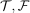 are quasi-abelian.
Proof
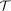
additive
We claim that 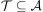 is closed under biproducts
For that we use the characterization of the essential image, i.e. it suffices to show 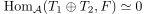 for arbitrary 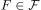
Here we use
existence of kernels / cokernels
Note that in particular colimits are computed in 
strict mono
for that we note that the strict monomorphisms are precisely the strict monomorphisms in , i.e. each monomorphisms i. strict.
This follows since we can compute quotients underlying in and then the diagram
is bicartesian and fully faithful functor detects limits & fully faithful functor detects colimits
Furthermore we may compute the pushout of an arbitrary map (so in particular a strict monomorphism) in
and get that the dashed morphism is a mono in , hence in particular strict.
strict epi
We claim that an epimorphism 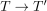 is strict if and only if its kernel computed in lies in .
If so, then we may again use that fully faithful functors detect limits / colimits to conclude that it is strict.
Suppose the kernel in does not lie in , then the kernel is given by a proper subobject which lies in .
It follows that since we may compute the cokernel underlying in , that the cokernel is not given by 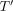, since the cokernel in is not given by - otherwise 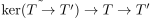 would be a kernel sequence in , which is not the case by assumption.
So let
be a pullback diagram in where 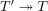 is a strict epimorphism.
We need to show that the dashed map is a strict epimorphism, i.e. that the kernel lies also in .
For that we claim that we can compute the pullback in and then the kernel of the dashed map will lie in (cf. kernel and pullback / pullback and fiber ) :
Here we use that the pullback above is an exact square in , so the dashed map 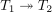 is an epimorphism .
Furthermore
is an exact sequence where 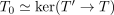